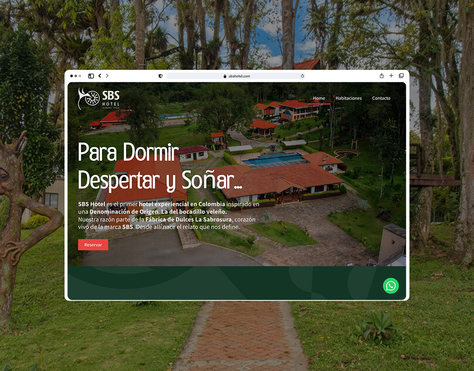
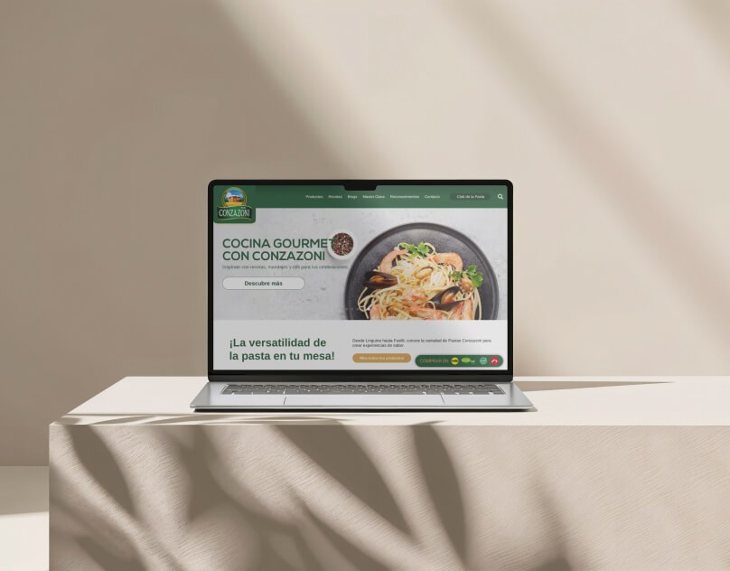
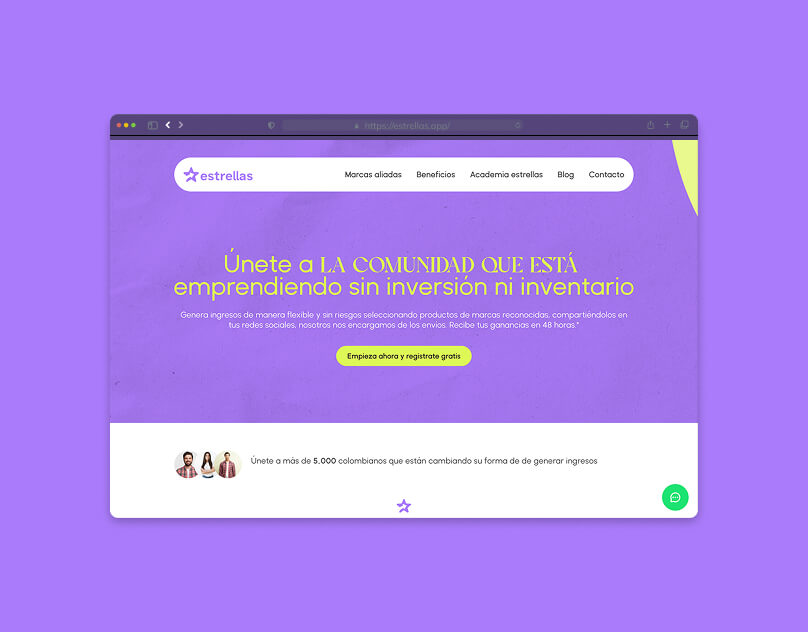

UX/UI Designer | No-Code Developer
Juan Felipe Peña Vacilescu
Multimedia engineer passionate about user experience, interface design and graphic design. I focus on shaping digital experiences that merge creativity with functionality.
Work

SBS Hotel — Website
Experiential hotel website rooted in Colombian cultural heritage, designed to convert visitors into guests.

Conzazoni — Website
Premium pasta brand redesign focused on elevating content hierarchy and turning recipes into the heart of the experience.

estrellas app — Website
Social selling platform connecting women creators with brands to earn commissions through product recommendations.
About
Multimedia engineer with a solid approach in user experience, interface design and graphic design. I've contributed to projects across web design, branding and digital products.
My process is research-first. I want to understand how people actually use a product before opening Figma — and I care about both the visual craft and the systems behind it.
I work across the full design scope, from research and ideation to UI design and handoff. I enjoy teams where ideas get challenged and decisions are made together.
View CVExperience
-
Dropi may. 2025 — NowWebmaster
Leading the design and development of digital experiences across the company's web ecosystem. I work on building and maintaining websites and platforms that align with business objectives, focusing on usability, smooth navigation and visual consistency. My role bridges design decisions with implementation, ensuring every interface reflects the brand and serves the user.
-
Partner Comunicación nov. 2023 — may. 2025Web Designer
Translated client briefs into impactful digital experiences. Worked closely with stakeholders to design visually engaging websites optimized for mobile, balancing creative direction with conversion goals. I was involved end-to-end — from understanding the client's brand and audience, to wireframing, UI design, and collaborating with developers through handoff.
-
Orión Estudio feb. 2023 — oct. 2023Junior Web Designer
Supported the studio's design and web development efforts, contributing to client projects and content calendars. I conducted ongoing research on trends in marketing, advertising and web design to fuel internal ideation and creative strategy. This role gave me my first exposure to working with real clients and shipping live websites.
-
Acsendo jul. 2022 — dic. 2022Designer
Designed and produced graphic materials supporting Acsendo's communications strategy. Contributed to the company's branding across multiple touchpoints — from materials aimed at current clients and potential leads, to internal stakeholder communications. Focused on maintaining visual consistency while adapting tone for each audience.